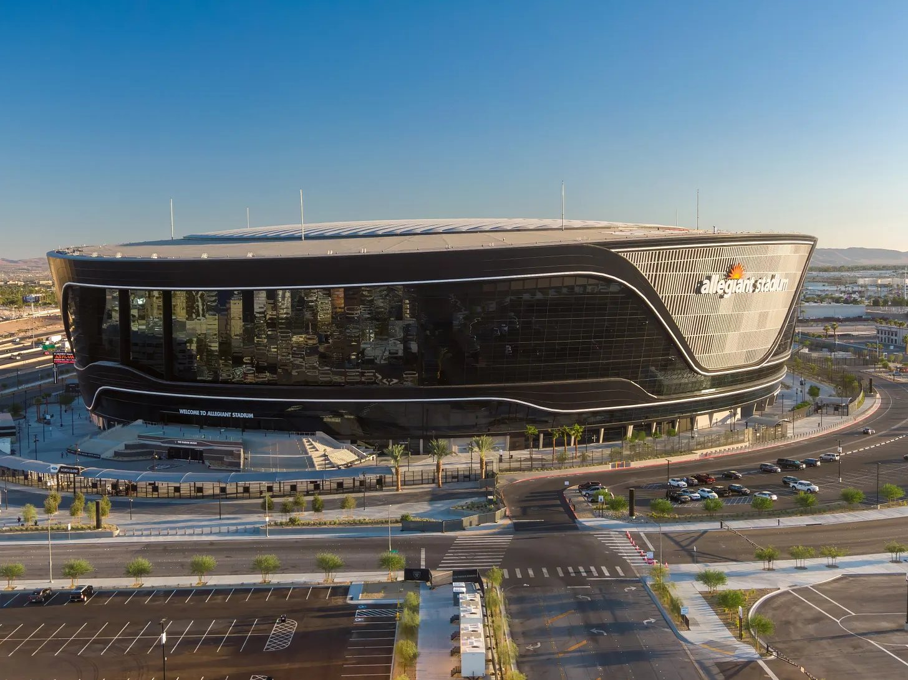
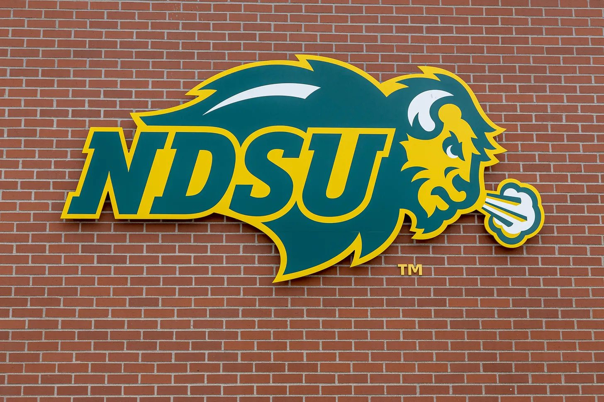

In its first season at the FBS level, North Dakota State has seamlessly established itself as one of the premier Group of 6 teams, sporting a perfect 5-0 record through the first month of the season. However, it will face its toughest test yet when it visits the dangerous, on-the-rise UNLV Rebels at Allegiant Stadium in Las Vegas.

UNLV welcomes the Bison after beating Cal in a 39-31 shootout last weekend. Rebel quarterback Jackson Arnold accounted for five touchdowns in the back-and-forth affair, the week’s only G6 vs. Power 4 matchup. Arnold also led the team with 110 rushing yards, the third-highest rushing total of his career and his most since Week 1 of the 2025 season, when he ran for 137 yards as an Auburn Tiger.
On the defensive side of the ball, the Rebels have seen a huge jump in production from sophomore defensive back Tre Fulton. After recording 33 tackles as a freshman, Fulton already has 36 through five games. He also leads the team in sacks with 3.5 and is tied for second on the team in forced fumbles and interceptions with one each. Fulton had only nine offers coming out of Liberty High School in Bakersfield, California, but he’s made a name for himself on the national stage as a redshirt sophomore.
The Rebels have won their last two games after starting the season 1-2. After failing to score more than 21 points in each of their first three games, they’ve put up 38 and 39 points in back-to-back weeks. The scoring punch is back in Vegas, but can it hold up against a Bison defense that just blanked Wyoming in the Fargodome?

North Dakota State is led by a balanced attack that hasn’t topped 228 passing yards or 80 rushing yards in any game. Quarterback Nathan Hayes has turned the offense into a machine that doesn’t need big plays and shootouts to find success. The incredibly efficient Bison offense has taken advantage of 10 forced turnovers and nine sacks from an even more efficient defense. Kelton McCaslin leads the way on the defensive line with three sacks and a pass defended through five games. The Bison have allowed two scores or fewer in four of their five games this season.
North Dakota State has drawn national attention and potential CFP recognition thanks to its undefeated record, but the biggest knock against the Bison is their strength of schedule. NDSU sits 137th out of 138 teams in SOS so far this season, and its best win came against Air Force, currently 91st in ESPN’s FPI. At 74th, UNLV is the second-best team remaining on NDSU’s schedule, behind only No. 39 New Mexico.
The Elevation Change Bot is now setting its own lines, and its projected spread and score both favor North Dakota State. The Bot has the Bison as 4.9-point favorites with an over/under of 48.4 and a projected score of 27-22. We’re going to agree with The Bot, but we think the Bison have a bit more in them than it does. North Dakota State will leave Vegas still perfect, and UNLV will add yet another close loss to its résumé.
Prediction
- North Dakota State
- 30
- UNLV
- 20